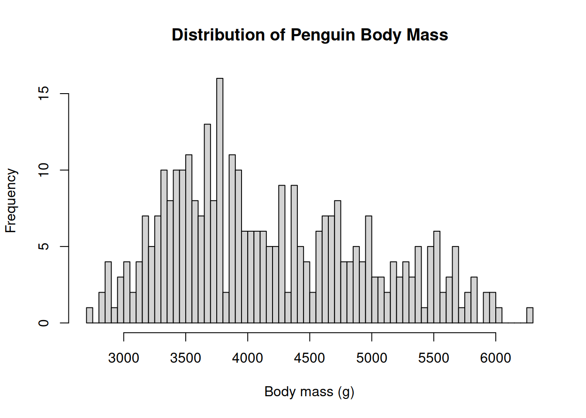

Associated Material
Zoom notes: Zoom Notes 04 -
Summarising data
Readings
Introduction
We do scientific research to test hypotheses, answer questions, or
just learn something about the world. After the often labourious process
of data collection, we may have hundreds (or even thousands) of data
points, but we haven’t actually learned anything. To squeeze the
knowledge out of our raw data, we must use statistics.
The formal topic of statistics is large and complex, and we do not
attempt to teach it here (there are papers for that, and we recommend
you take as many of them as possible). We concentrate on how to use R to
perform common statistical analyses. R is especially useful for such
tasks because of its extensive set of statistical libraries and
efficient data handling facilities.
There are two general types of statistical analyses – descriptive
statistics, which allow us to summarise and describe our raw data, and
inferential statistics, which allow us to generalise our results beyond
our observed data. We will only cover descriptive statistics in
R4SSP.
For this module, we will use two data sets – the “Palmers Penguins”
data describing penguin populations in the Palmer Archipelago
(Antarctica), and a data set containing Chlorophyll A (ChlA) readings
from three New Zealand lakes (data provided by the local Regional
Councils). ChlA levels are an indicator of phytoplankton biomass, and
provide a general measure of lake health – more ChlA indicates poorer
health. The “toxic algal blooms” that occur occasionally in New Zealand
lakes are accompanied by a dramatic spike in measured ChlA.
Downloading the ChlA NZ Lakes data:
One option for downloading the data is to use
download.file() in RStudio.
download.file(url = "https://raw.githubusercontent.com/rtis-training/2023-s2-r4ssp/main/docs/data/NZ_lake_chla_data.csv",
destfile = "data/NZ_lake_chla_data.csv")
Remember to adjust the value of destfile to match
your project directory structure.
The second option is to download the file from the R4SSP shared
Google Drive folder at https://drive.google.com/drive/folders/1UBp-P4wFAaQL3egIQ7dGa2RQe6RQKqgy
Loading the data
#===============================================
# The Penguin Data:
#===============================================
# Install palmerpenguins once on any computer
# install.packages("palmerspenguins")
# After loading the library, a tibble called 'penguins' will be initialised
library(palmerpenguins)
# Check the structure
str(penguins)
#> tibble [344 × 8] (S3: tbl_df/tbl/data.frame)
#> $ species : Factor w/ 3 levels "Adelie","Chinstrap",..: 1 1 1 1 1 1 1 1 1 1 ...
#> $ island : Factor w/ 3 levels "Biscoe","Dream",..: 3 3 3 3 3 3 3 3 3 3 ...
#> $ bill_length_mm : num [1:344] 39.1 39.5 40.3 NA 36.7 39.3 38.9 39.2 34.1 42 ...
#> $ bill_depth_mm : num [1:344] 18.7 17.4 18 NA 19.3 20.6 17.8 19.6 18.1 20.2 ...
#> $ flipper_length_mm: int [1:344] 181 186 195 NA 193 190 181 195 193 190 ...
#> $ body_mass_g : int [1:344] 3750 3800 3250 NA 3450 3650 3625 4675 3475 4250 ...
#> $ sex : Factor w/ 2 levels "female","male": 2 1 1 NA 1 2 1 2 NA NA ...
#> $ year : int [1:344] 2007 2007 2007 2007 2007 2007 2007 2007 2007 2007 ...
#===============================================
# The Lake Data:
#===============================================
# Read in the lakes data file
lakes_df <- read.csv("data/NZ_lake_chla_data.csv")
# Check the structure
str(lakes_df)
#> 'data.frame': 408 obs. of 4 variables:
#> $ LakeName: chr "Lake Ellesmere" "Lake Ellesmere" "Lake Ellesmere" "Lake Ellesmere" ...
#> $ Year : int 2004 2004 2004 2004 2004 2004 2004 2004 2004 2004 ...
#> $ Month : int 1 2 3 4 5 6 7 8 9 10 ...
#> $ ChlA : num 66.9 79.9 95 82.4 59.6 69 62.1 96.3 135 102 ...
In the lakes data, the LakeName, Month, and Year columns are all
categorical grouping variables. Many data analysis methods in R require
that categorical variables be of type factor (as in
“experimental factor”). Note however, that these columns have been
imported into R as types chr (strings) and int
(integers). We should cast these columns to type factor to
insure that our subsequent analyses are correct. This cast does not
affect the values in the columns, it simply signals to R that they are
group identifiers, not raw string or number data values.
lakes_df$LakeName <- as.factor(lakes_df$LakeName)
lakes_df$Year <- as.factor(lakes_df$Year)
lakes_df$Month <- as.factor(lakes_df$Month)
# Confirm that the column data types have been updated
str(lakes_df)
#> 'data.frame': 408 obs. of 4 variables:
#> $ LakeName: Factor w/ 3 levels "Lake Ellesmere",..: 1 1 1 1 1 1 1 1 1 1 ...
#> $ Year : Factor w/ 13 levels "2001","2002",..: 4 4 4 4 4 4 4 4 4 4 ...
#> $ Month : Factor w/ 12 levels "1","2","3","4",..: 1 2 3 4 5 6 7 8 9 10 ...
#> $ ChlA : num 66.9 79.9 95 82.4 59.6 69 62.1 96.3 135 102 ...
Visualise the data (revision)
When faced with a new data set, my first step is invariably to start
making graphs. These “pictures” of your data provide an easy way to see
large-scale patterns that will help guide your further analysis. They
also help you to catch any problems in your data (see the skewness
exercise in the Zoom Notes for this module) that must be addressed
before proceeding to more complex analyses.
An excellent first graph for continuous (i.e. not categorical) data
is the frequency distribution, or
histogram, which has data value on the x-axis and
frequency (i.e. count or proportion) on the y-axis. This shows you, in a
single picture, how your data are distributed. We met the histogram in
Module 02.
The penguins data set contains values for 344 different
penguins. We can begin by looking at how the penguins’ body weights are
distributed.
Histogram with base R
# The 'breaks' argument controls the number of bars drawn
hist(penguins$body_mass_g,
breaks = 100,
main="Distribution of Penguin Body Mass", xlab = "Body mass (g)", ylab = "Frequency")

Histogram with ggplot
# Load the library before your first call to ggplot
library(ggplot2)
# The values provided to 'colour' and 'fill' are hexidecimal colour codes. Note the
# hash mark prefix. It is required.
ggplot(data = penguins, mapping = aes(x = body_mass_g)) +
geom_histogram(colour = "#7133ff", fill="#bbbbff") +
labs(title = "Distribution of Penguin Body Mass",
x = "Body Mass (g)",
y = "Frequency") + theme_bw()

Illustrating Groups
Using ggplot, we can illustrate group effects in histograms by
defining a mapping from a grouping (i.e. categorical) variable to the
fill property of function geom_histogram. For
example, the code below will make histograms of all the ChlA values in
data frame lakes_df, with each lake in a different
colour
By default, geom_histogram produces a stacked plot – that is, the
different groups are shown stacked up in a single bar, separated by
their colour. To make the plot with side-by-side bars, set
geom_histogram’s position argument to dodge.
Note that this is not a mapping, it is simply an argument to function
geom_histogram. What does this simple graph tell you about the health of
these three lakes?
For continuous data
# Stacked grouped histogram
ggplot(data = lakes_df, mapping = aes(x = ChlA)) +
geom_histogram(aes(fill=LakeName), colour = 'black')

# Side-by-side grouped histogram
ggplot(data = lakes_df, mapping = aes(x = ChlA)) +
geom_histogram(aes(fill=LakeName), colour = 'black', position="dodge")

For categorical data
The functions hist and geom_histogram are
appropriate for continuous (numerical) data. For
categorical variables (e.g. Species and Island in the
penguin data set) one often uses the more general geom_bar
function (geom_histogram is a special case of geom_bar). The example
code below shows how to generate a bar graph in ggplot, modifying the
default ggplot colour palette to something more accessible to viewers
with atypical colour vision:
# "Colour-blind friendly" palette from #https://personal.sron.nl/~pault/
# These are hexadecimal colour codes. The # is required.
customPalette <- c("#DDAA33", "#BB5566", "#004488")
# Generate a stacked bar plot, and use our custom colour palette
ggplot(data = penguins, mapping = aes(x = island, fill=species)) +
geom_bar() +
scale_fill_manual(values = customPalette)

As with geom_histogram above, we set the position argument of
geom_bar to change from stacked to side-by-side format.

Even a simple graph like this helps you to get to know your data.
Just by inspection we see that Biscoe island has the largest population,
Torgersen has only Adelie penguins, Dream Island has nearly equal
numbers of Chinstrap and Gentoo, etc. When first approaching a big data
set, always think about starting with some graphs.
Measures of Central Tendency
Look at the graph you made earlier showing the distributions of ChlA
for the three lakes. You might describe the Lake Ellesmere ChlA readings
as “mostly between 50 and 100” and the Lake Rotorua readings as “mostly
around 10”. Statements like this are attempts to describe a
typical score from a large data set. They allow us to
capture the fact that, for example, overall, Lake Ellesmere has
higher ChlA readings than Lake Rotorua. It is not the case that
every Ellesmere reading is higher than every Rotorua
reading, but typically this is the case.
In statistics, a precise measure of such typicality is called a
Measure of Central Tendency (MCT). The most common MCTs
are the mean, the median and the
mode. These are, respectively, the mathematical
average, the middle score, and the most frequent score (or scores) in a
data set. There are some subtle statistical issues around which of the
three MCT is appropriate for any given data analysis situation (ask your
lecturer for details), but they are all easy to compute in R (we have,
in fact, already met function mean in earlier modules), and
we show example code below for computing these descriptive statistics on
a single column of data from the penguins data set.
Note that the penguins data has some missing some values (cf. Module
03 - Subsetting), The functions for mean and median will not work if the
input data have any NA (missing) values. The most common
solution is to omit those scores from the computation by setting the
na.rm argument to TRUE as shown:
Mean
# We have seen this code before... We pass the column of interest
# to function mean
mean(penguins$body_mass_g, na.rm=TRUE)
#> [1] 4201.754
Mode
Base R has no built-in function for mode. After Module 08 you will be
able to write your own Mode function. Or you can use one of several
available in auxiliary libraries. The DescTools library is a good
one.
# Install the package once on each machine
# install.packages("DescTools")
# Load the library once each session
library(DescTools)
#Call the function
Mode(penguins$body_mass_g, na.rm=TRUE)
#> [1] 3800
#> attr(,"freq")
#> [1] 12
Note that DescTools::Mode returns the modal (i.e. most common value)
with an attached attribute called “freq” equal to the
number of occurrences.
Using function summary
When you have a very large number of data measures, you may wish to
compute MCTs for individual columns as shown above. An efficient
alternative for smaller data sets is to use function
summary, which accepts a data frame and summarises
all its columns at once. Function summary computes
frequencies for categorical variables, and measures of central tendency
for continuous variables. It also reports the numbers of NA values in
each column. Function summary provides some additional
measures (minimum, 1st quartile, 3rd quartile, and maximum) that we will
discuss in more detail later.
summary(penguins)
#> species island bill_length_mm bill_depth_mm
#> Adelie :152 Biscoe :168 Min. :32.10 Min. :13.10
#> Chinstrap: 68 Dream :124 1st Qu.:39.23 1st Qu.:15.60
#> Gentoo :124 Torgersen: 52 Median :44.45 Median :17.30
#> Mean :43.92 Mean :17.15
#> 3rd Qu.:48.50 3rd Qu.:18.70
#> Max. :59.60 Max. :21.50
#> NA's :2 NA's :2
#> flipper_length_mm body_mass_g sex year
#> Min. :172.0 Min. :2700 female:165 Min. :2007
#> 1st Qu.:190.0 1st Qu.:3550 male :168 1st Qu.:2007
#> Median :197.0 Median :4050 NA's : 11 Median :2008
#> Mean :200.9 Mean :4202 Mean :2008
#> 3rd Qu.:213.0 3rd Qu.:4750 3rd Qu.:2009
#> Max. :231.0 Max. :6300 Max. :2009
#> NA's :2 NA's :2
Exercise
The results for column year may not be what you
expected. Function summary has computed an average
value for year. Does this seem like the appropriate
analysis? (Answer => No.) Modify penguins to make
summary treat the year data correctly, and
rerun summary.
Measures of Variability
In the histograms for ChlA from each of three New Zealand lakes, the
three groups of scores did not overlap completely, indicating that the
typical values – the central tendencies – were different for the three
lakes. We can confirm this observation by comparing the means. We can
use function aggregate in base R, or group_by
and summarise, from library dplyr.
Using aggregate
# Using aggregate. compute the group means
aggregate(lakes_df$ChlA, by = list(Lake = lakes_df$LakeName), FUN=mean)
#> Lake x
#> 1 Lake Ellesmere 80.566667
#> 2 Lake Rotorua 18.419015
#> 3 Lake Taupo 1.030606
Using group_by and summarise
# Using `group_by` and `summarise`
library(dplyr)
#>
#> Attaching package: 'dplyr'
#> The following objects are masked from 'package:stats':
#>
#> filter, lag
#> The following objects are masked from 'package:base':
#>
#> intersect, setdiff, setequal, union
lakes_df %>%
group_by(LakeName) %>%
summarise(MeanChlA = mean(ChlA))
#> # A tibble: 3 × 2
#> LakeName MeanChlA
#> <fct> <dbl>
#> 1 Lake Ellesmere 80.6
#> 2 Lake Rotorua 18.4
#> 3 Lake Taupo 1.03
However, not only do the central points of the three lakes’
distributions differ, so do the amounts of “spread”. Lake Taupo’s
distribution is very narrow; all its readings are similar. Lake
Ellesmere is squashed and spread out; its readings vary a lot. Lake
Rotorua is intermediate. To illustrate this more clearly, we can use
ggplot to make separate graphs for each lake, using function
facet_grid.
Note the scales argument to facet_grid.
This allows each graph to adjust its y-axis to its data domain, which
makes the comparison visually easier; this should be mentioned in the
discussion of the figure in a manuscript.
Using facet_grid
ggplot(data = lakes_df) +
geom_histogram(aes(x = ChlA, fill=LakeName), color="black") +
facet_grid(rows = vars(LakeName), scales="free_y")

Statistically, the “spread out” quality of a distribution reflects
its variability.
We can capture variability more precisely with measures of the
range of the data set. These are typically the smallest
and largest scores (minimum and maximum) and the scores at the 25th and
75th percentiles (also called 1st quartile and
3rd quartile). Earlier, we saw that function
summary computes these measures of range. However, if we
simply pass the entire lakes_df data frame to function
summary, it will combine the data from all three lakes – to
compare the lakes we need the values from each lake separately.
In earlier modules we have seen two techniques for selecting out just
the rows from one lake (using [] or using filter). To run
function summary on each lake separately, we could select
the subset for each lake in turn, and pass each subset to
summary. However, we can achieve the same result more
parsimoniously by using function aggregate. Above we used
aggregate with FUN = mean to get the mean ChlA for each
lake. We can use FUN = summary to call function
summary separately for the records of each lake.
# Apply function summary by group
aggregate(lakes_df$ChlA, by = list(Lake = lakes_df$LakeName), FUN=summary)
#> Lake x.Min. x.1st Qu. x.Median x.Mean x.3rd Qu.
#> 1 Lake Ellesmere 1.300000 44.000000 67.950000 80.566667 97.087500
#> 2 Lake Rotorua 2.500000 10.825000 15.950000 18.419015 23.625000
#> 3 Lake Taupo 0.200000 0.600000 0.900000 1.030606 1.400000
#> x.Max.
#> 1 521.300000
#> 2 77.100000
#> 3 2.900000
We can also measure the variablity in a data set with the
standard deviation. The standard deviation is the most
commonly used measure of variability, and it plays an important
mathematical role in inferential statistics (ask your stats lecturer for
details – it’s very interesting). Conceptually, the standard deviation
is almost equal to the average distance from the mean across
all the values in a data set – it doesn’t equal exactly that
value, because of how it is computed, but it is close, and it can be
helpful to think of it with this approximation. Big standard deviation
shows that scores are spread far from their mean; small standard
deviation shows that scores tend to huddle close to their mean. Compute
standard deviation with function sd.
Using aggregate
# Using aggregate. compute the group sds
aggregate(lakes_df$ChlA, by = list(Lake = lakes_df$LakeName), FUN=sd)
#> Lake x
#> 1 Lake Ellesmere 63.5217194
#> 2 Lake Rotorua 11.6637583
#> 3 Lake Taupo 0.5627233
Using group_by and summarise
lakes_df %>%
group_by(LakeName) %>%
summarise(StdDev = sd(ChlA))
#> # A tibble: 3 × 2
#> LakeName StdDev
#> <fct> <dbl>
#> 1 Lake Ellesmere 63.5
#> 2 Lake Rotorua 11.7
#> 3 Lake Taupo 0.563
The histograms, the measures of range, and the standard deviations
all indicate that Taupo has very stable ChlA measures, Rotorua is a
little noisier, and Ellesmere is all over the place. This phytoplankton
biomass stability is an important indicator of lake health – a stable
lake is at much lower risk of a toxic algal bloom.
Efficient code for descriptive statistics
The function describeBy in package psych
will compute all the descriptive summaries we have seen (and a few more)
in one statement. When you are exploring a single data column and a
single grouping column (so the output doesn’t get too large), this is a
very useful function.
# Install once on any computer
#install.packages("psych")
# Call once each R session
library(psych)
#>
#> Attaching package: 'psych'
#> The following objects are masked from 'package:DescTools':
#>
#> AUC, ICC, SD
#> The following objects are masked from 'package:ggplot2':
#>
#> %+%, alpha
# Pass in the data column and the grouping column
describeBy(lakes_df$ChlA, lakes_df$LakeName)
#>
#> Descriptive statistics by group
#> group: Lake Ellesmere
#> vars n mean sd median trimmed mad min max range skew kurtosis se
#> X1 1 120 80.57 63.52 67.95 72.45 40.7 1.3 521.3 520 3.12 17.5 5.8
#> ------------------------------------------------------------
#> group: Lake Rotorua
#> vars n mean sd median trimmed mad min max range skew kurtosis se
#> X1 1 132 18.42 11.66 15.95 16.97 9.12 2.5 77.1 74.6 1.71 4.75 1.02
#> ------------------------------------------------------------
#> group: Lake Taupo
#> vars n mean sd median trimmed mad min max range skew kurtosis se
#> X1 1 156 1.03 0.56 0.9 0.97 0.56 0.2 2.9 2.7 0.97 0.5 0.05
Package psych contains many other interesting
statistical tools, especially for multivariate data sets commonly found
in psychological and ecological research. Ask Google or your lecturer
for details.
Exploring the relationship between two variables
The preceding descriptive statistics all looked at data measures –
ChlA, bill length, body weight, etc. – individually, summarising their
distribution, central tendency and variability. Often, however, we are
interested in describing the relationship between data
measures. For example, we might want to know if heavier
penguins also tend to have longer bills. This type of relationship is
called a correlation. When we have more than one
measure for each experimental participant (or each penguin, or each
lake) we can explore correlations between pairs of measures graphically
with a scatterplot. A scatterplot has one measure on
each axis, and one point for each participant’s pair of scores.
In the code example below we make a scatterplot with ggplot
(cf. Module 02), and show how to add a linear trend
line. Conceptually, this is the line that runs through the
center of the scatterplot points, and it helps us to see the direction
of the relationship. Mathematically, trend lines are actually very
complicated things, and we generate them with the powerful function
lm,(for linear model). You will learn
about the many fascinating things you can do with linear modeling if you
take advanced statistics papers.
Scatterplot with linear trend line
# geom_point plots the points of the scatterplot
# geom_smooth plots the linear trend line computed with function lm
# The se argument determines whether error bars are shown
# around the trend line.
ggplot(data = penguins, mapping = aes(x = body_mass_g, y = bill_length_mm)) +
geom_point() +
geom_smooth(method = "lm", se=FALSE)

The scatterplot gives us a very clear picture: those penguins with
higher body weights tend to also have longer bills, and this is
reflected in the positive slope of the trendline. Note however that this
is not an absolute rule. Is it easy to find pairs of points such that
the lighter of two penguins has the longer bill. This is typical of
correlational data.
There are various statistical measures that capture the strength of a
correlation (i.e. how close it is to being an absolute rule). For
continuous, numerical data (such as bill length and body weight) use the
R function cor to compute the numerical correlation value.
As with means and medians, we must tell cor how to cope
with missing data (NA scores). Unfortunately the syntax is not
consistent across the functions. For function mean we set
argument na.rm = TRUE. For function cor we
must set argument use = "complete.obs", meaning that we
want the function to use only those rows that are complete (i.e. have
both values). These idiosyncracies occur from time to time in R; you
just have to learn them.
Correlation coefficient
# Pass the two data columns into function cor
cor(penguins$bill_length_mm, penguins$body_mass_g, use="complete.obs")
#> [1] 0.5951098
Function cor returns a value between -1 and 1.
Correlations that trend downward (i.e. if one score is high, the other
tends to be low) will have a negative correlation value. Correlations
that trend upward (i.e. if one score is high the other also tends to be
high) will have a positive correlation value. The closer the absolute
value of cor is to 1, the stronger the correlation (you
know who to talk to for more detail, don’t you?).
For example, consider these two scatterplots:

Exercise
For one of the scatterplots above, the computed correlation score is
0.60. For the other, it is 0.87. First, predict which is which. Second,
write the necessary R code to confirm your prediction.
